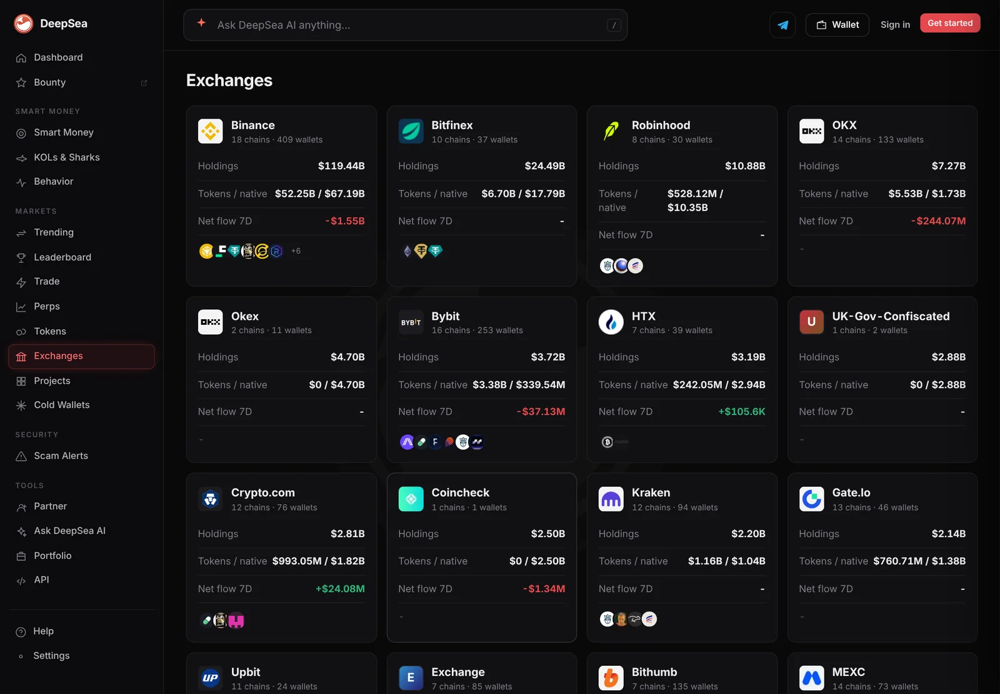

Binance's wallets lost 4,857 bitcoin in the crash but took in $1.12 billion of USDT
In about 18 hours, bitcoin fell nearly 10% and the coins in Binance's listed wallets shifted: less bitcoin, more dollar tokens. Bitget lost 1,140 bitcoin, while OKX added 1,042.
Key points
- CoinMarketCap's reserve data count 675,172 bitcoin in Binance's listed wallets at 12:38 a.m. ET Saturday, down 4,857 from 680,028 at 6:42 a.m. ET Friday.
- Over the same 18 hours, USDT in those wallets rose about $1.12 billion, to $25.64 billion.
- DeepSea's exchange page shows Binance's token holdings rising to $52.25 billion while its native coins, led by bitcoin, fell in value to $67.19 billion.
 What DeepSea's data shows
What DeepSea's data shows
DeepSea's exchange page tracks its own list of exchange wallets. At 12:47 a.m. ET Saturday it put Binance's holdings at $119.44 billion across 409 wallets on 18 chains, down from $121.47 billion at 6:36 a.m. ET Friday.
The split shows the same pattern as the coin counts. Binance's native coins, such as bitcoin and ether, fell in value from $70.26 billion to $67.19 billion. Its other tokens, which include USDT and USDC, rose from $51.21 billion to $52.25 billion, even as almost every token price fell.
- Bitfinex: $24.49 billion, down from $25.38 billion
- Robinhood: $10.88 billion, down from $11.37 billion
- Bitget: $360.84 million, down from $402.67 million
DeepSea's seven-day net flow for Binance still read minus $1.55 billion, the same figure as Friday morning, so we do not treat it as a new reading.

Data: DeepSea (desea.io), checked November 21, 2026, 12:47 a.m. ET.
What moved
Exchanges publish the addresses of their wallets so anyone can check what they hold. Trackers add up those balances, so the coin counts show what is sitting on an exchange, whatever the price does.
On Friday, November 20, at 6:42 a.m. ET, CoinMarketCap's Binance reserve data counted 680,028 bitcoin. At 12:38 a.m. ET on Saturday the same tracker showed 675,171.55, about 4,857 fewer. At $55,858, the price CoinGecko showed at 12:43 a.m. ET, that is about $271 million. Bitcoin had been near $62,000 at 6 a.m. ET Friday.
Dollar tokens went the other way. USDT in Binance's listed wallets rose from $24.52 billion to $25.64 billion, a gain of about $1.12 billion. USDC was flat at $5.67 billion, and ether was almost unchanged at 3.19 million.
The data show where coins sat, not who moved them or why.
The other big exchanges
The same tracker shows smaller and mixed moves elsewhere. Bitget fell from 32,233 to 31,093 bitcoin, about 1,140 fewer, or 3.5% of its stack. OKX went the other way, adding about 1,042 to 127,688. Bybit lost about 129 bitcoin, while Bitfinex and Gate each gained between 100 and 150.
Bybit's USDT rose about $160 million to $2.71 billion, and OKX's slipped about $80 million to $5.69 billion.
Change in bitcoin held, 6:42 a.m. ET November 20 to 12:38 a.m. ET November 21
BTC
Source: CoinMarketCap exchange reserve data for Binance, Bitget, Bybit, Bitfinex, Gate and OKX, read November 20, 2026, 6:42 a.m. ET and November 21, 2026, 12:38 a.m. ET

Most of the drop in value is the price
In dollars, the change looks much bigger than in coins. CoinMarketCap's tracker valued Binance's bitcoin at $37.62 billion at 12:38 a.m. ET Saturday, against $41.98 billion on Friday morning. That is about $4.36 billion less, but only about $271 million of it is the 4,857 coins that left. The rest is the lower price on the coins that stayed.
Ether shows the same effect. The tracker counted 3.19 million ether in Binance's wallets, worth $4.97 billion, with almost no change in the number of coins. So when an exchange's total holdings fall during a crash, the coin counts are the better guide to what actually moved.
LC Insight analysis
This section is our reading of the facts above, not a statement of fact.
- We think the most useful signal is the mix. Binance held fewer bitcoin and more USDT after a drop of nearly 10%, which fits traders swapping or parking value in dollar tokens on the exchange. The data cannot show who did it.
- The 4,857 bitcoin is under 1% of Binance's tracked stack, so this is a shift, not a run on the exchange.
- OKX adding about 1,042 bitcoin while Binance and Bitget lost coins shows exchanges did not move as one block in the crash.
What's next
- Binance's bitcoin count against 675,172 in CoinMarketCap's tracker.
- Whether Binance's USDT keeps rising above $25.64 billion.
- Whether DeepSea's seven-day Binance net flow updates from minus $1.55 billion.
Disclaimer. This article is based on public information and the sources listed below as of the update time shown. It is for information only and is not investment, legal or tax advice. Figures may change as companies and authorities publish new data.
Sources
- CoinMarketCap, Binance exchange reserve data (read November 21, 2026, 12:38 a.m. ET)
- CoinMarketCap, Bitget, OKX, Bybit, Bitfinex and Gate reserve data (read November 21, 2026, 12:38 a.m. ET)
- CoinGecko, Bitcoin price (read November 21, 2026, 12:43 a.m. ET)
- DeepSea, Exchanges (read November 21, 2026, 12:47 a.m. ET)